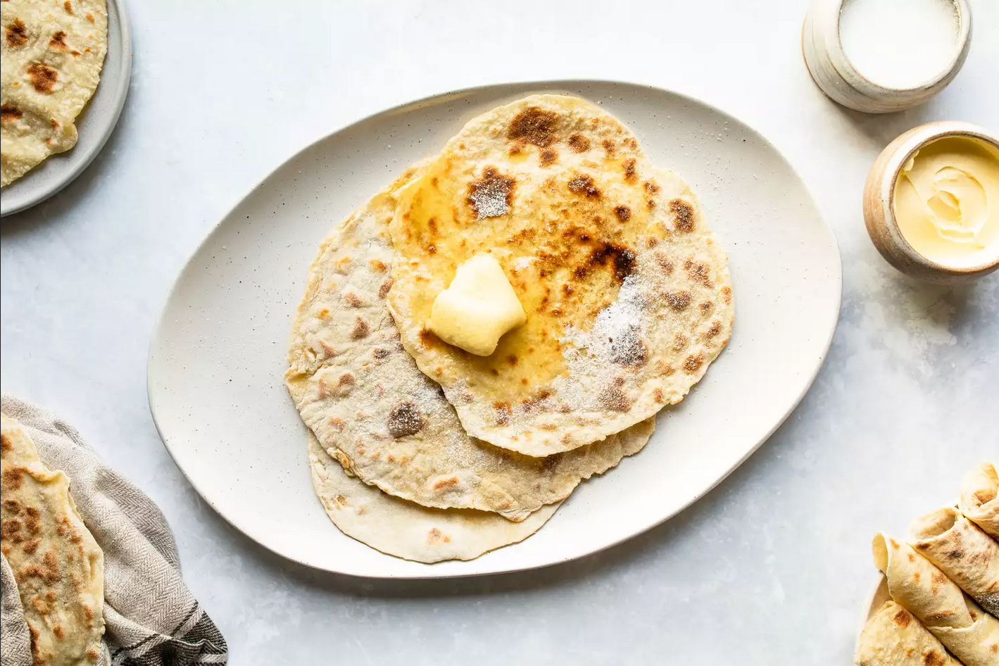

Lefse

Perhaps no food is more beloved by Norwegians than lefse. Prepared on special lefse griddles
and turned with a long wooden stick, this thin potato flatbread is best served warm with butter and sugar.
Ingredients
- 2 pounds Idaho russet potatoes, about 5 large potatoes
- 1/4 cup heavy cream
- 1 tablespoon unsalted butter, softened
- 1 tablespoon sugar
- 1 teaspoon salt
- 1 cup flour, plus more for dusting
For serving
- Butter, to taste
- Sugar, to taste
Steps to make it
Make the Dough
- Gather the ingredients.
- Preheat the oven to 175 F. Peel the potatoes, making sure that
no peels or eyes remain. Coarsely chop them into 1-inch pieces.
- In a stockpot, bring water to a boil and add the potatoes. Boil them
until they are fork-tender, about 15 to 20 minutes.
- Drain the boiled potatoes well. Place them on a baking sheet lined with
parchment paper and bring them into the hot oven for 15 minutes to dry them further.
- Remove the potatoes from the oven and pass them through a ricer. You need them to be finely riced,
so twice through the ricer might give you a better texture. You should have at least 4 cups of
riced potatoes.
- Mix in the heavy cream, butter, sugar, and salt.
- Mix well and place the potato dough in the refrigerator, covered, to chill overnight.
Shape the Lefse
- Preheat a lefse griddle or your skillet of choice to 425 F. You need a very hot surface to properly
cook the lefse. Use a pastry blender to cut the flour into the chilled potatoes, or vigorously knead
the flour in until you have a smooth dough.
- With the help of an ice cream scoop, divide the dough into 16 to 20 biscuit-sized balls.
- Generously flour a pastry cloth or board and a rolling pin. Roll out each piece of dough into a 12-inch
circle, dusting with more flour as needed.
- Carefully lift the circle with a lefse stick or the handle of a flat wooden spatula. Transfer it quickly to the griddle.
- Cook the lefse on the griddle until brown spots begin to appear.
- Flip and cook the other side.
- Remove the cooked lefse to a plate lined with a damp clean cloth to cool. Cover with another damp cloth. Continue to cook the
remaining dough balls until you've used all of the dough.
- Serve the lefse smeared with butter to taste and a sprinkle or two of sugar.
- Enjoy!